3D Model Creation¶
This tutorial assembles the 3D model of a robot arm for display in Stellar Designer, Motion Studio and the Station. It is optional. The model is for visualization only: the kinematics come from the DH parameters of the .sdd document, not from the model, and every robot runs without one. You can skip this page and add a model later.
The example is a 6-axis manipulator. Download its parts and unzip them:

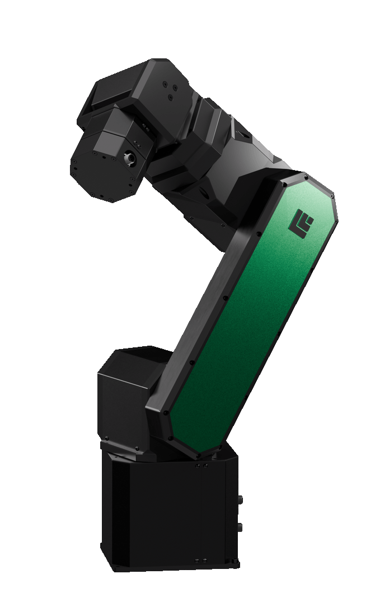
For your own robot you need one 3D model file per link, exported from your CAD design, and the robot's DH parameters.
The steps use Blender, which reads most common 3D formats. Any other 3D tool works as long as it produces the same object names, hierarchy and file format.
1. Prepare the Scene in Blender¶
Clear the Scene¶

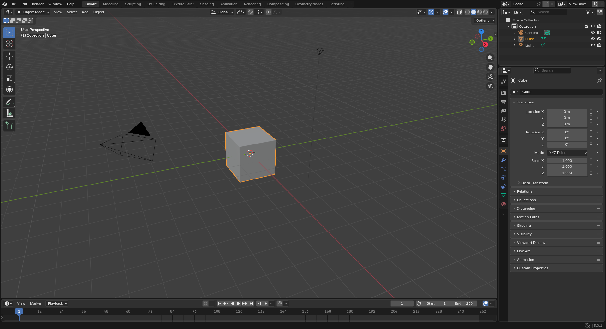
Open Blender and delete the default Camera, Cube and Light.
Naming Conventions¶
| Part | Name |
|---|---|
| Base joint | J0 |
| Base link | link0 |
| Joints | J1 to Jn |
| Links | link1 to linkn |
n is the number of joints, 6 in this example.
Create the Joints¶

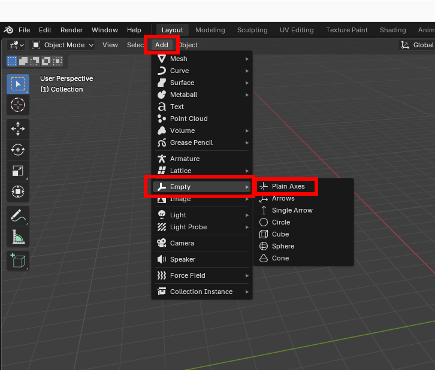

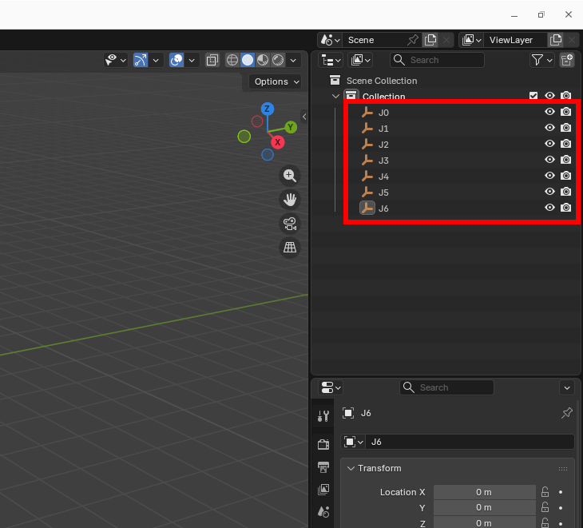
Click Add › Empty › Plain Axes to add an axis object. Add seven of them and rename them J0 to J6. Stellar Designer finds the joints by these names, so each name must be J followed by its number.
Import the Links¶

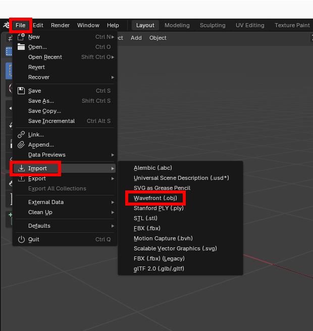

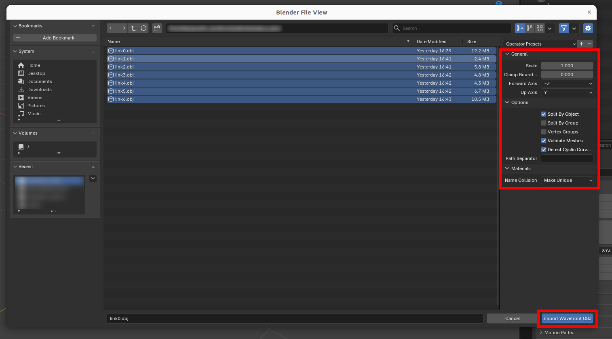

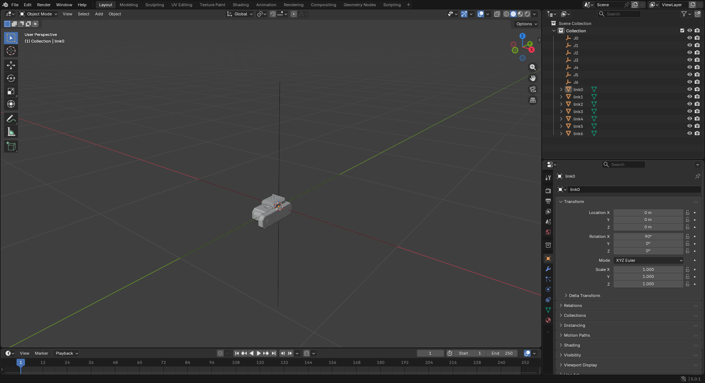
Click File › Import › Wavefront (.obj), open the folder of the unzipped parts and import all seven parts with the import settings shown above. The scene then looks like the last picture.

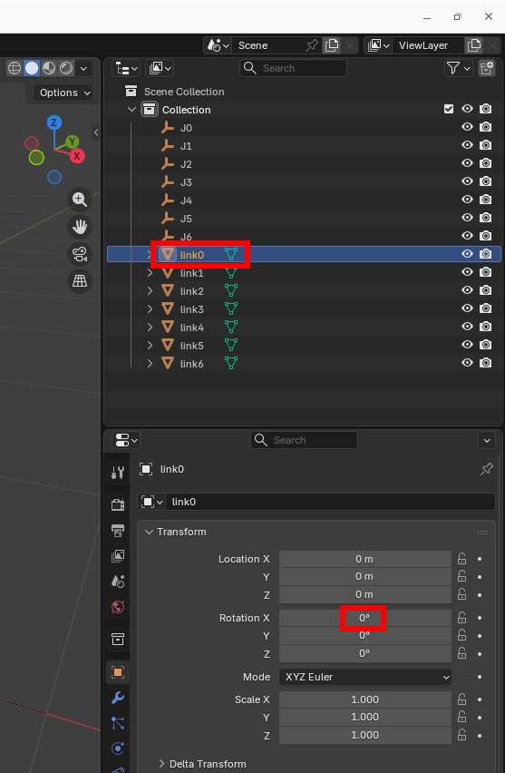

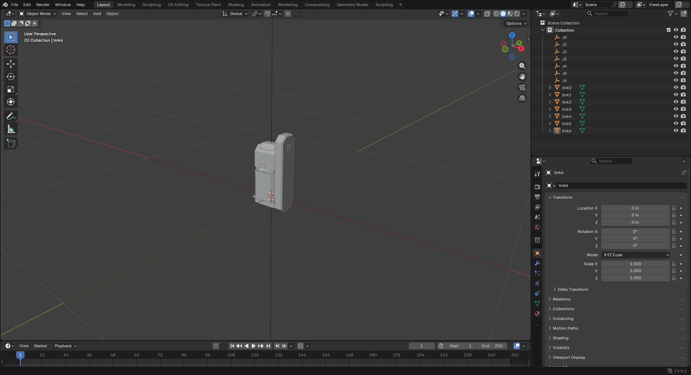
Select link0 and set Rotation X to 0: the part stands upright. Repeat this for the other parts.
Attach Each Link to Its Joint¶

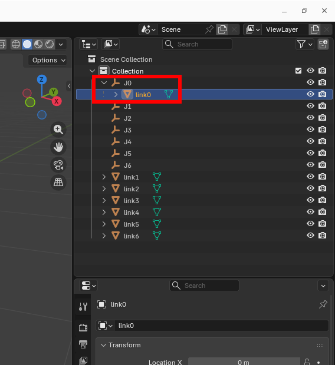

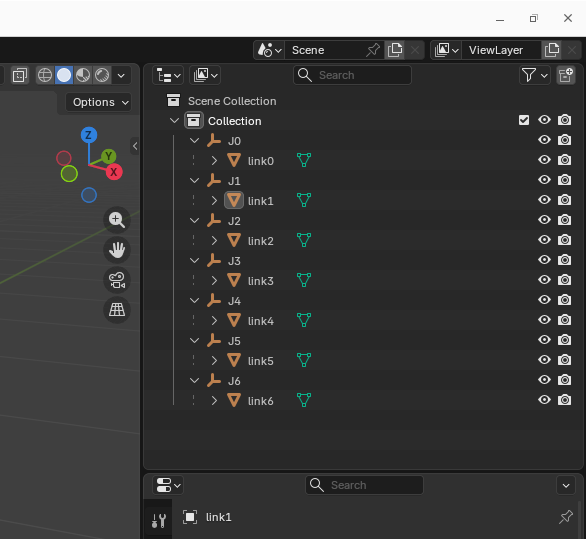
Select link0 and Shift-drag it onto J0, so that link0 sits under J0. Repeat this for the other links.
2. Build the Hierarchy¶
The robot is a serial chain: each joint is a child of the previous joint, and each link is a child of its joint.
World
└── J0
├── link0
└── J1
├── link1
└── J2
├── link2
└── J3
├── link3
└── J4
├── link4
└── J5
├── link5
└── J6
└── link6

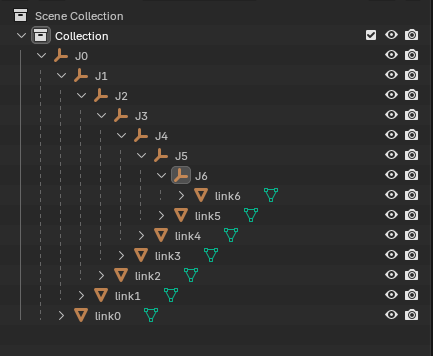
Select J1 and Shift-drag it onto J0: J1 and link1 are now under J0. Repeat this for the other joints.
| Item | Description |
|---|---|
World |
The scene of the 3D tool |
J0 to Jn |
Joint nodes |
link0 to linkn |
Link models |
Each joint Jn must be a child of the previous joint, and each link linkn a child of its joint Jn. With a different hierarchy the links do not move with their joints.
3. Match the DH Parameters¶
The joint frames in Blender must match the DH parameters of the robot in Stellar Designer.
DH Convention¶
Stellar Designer applies the four DH parameters of a joint in this fixed order:
- Rotation about Z by θ (theta)
- Translation along Z by d
- Translation along X by a
- Rotation about X by α (alpha)
Place the Joints¶

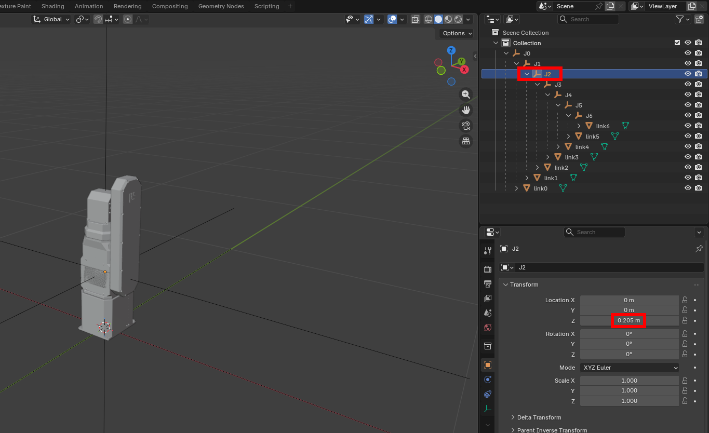
Joint J1 of the example has θ = 0, d = 205 mm, a = 0 and α = 0 in Stellar Designer, so the frame of J2 sits 205 mm above J1 along Z.
- Select
J2and set Location Z to0.205.link2and everything underJ2moves up. - Set Location Z of
J3to0.27and ofJ5to0.23. The model then looks like the last picture below.

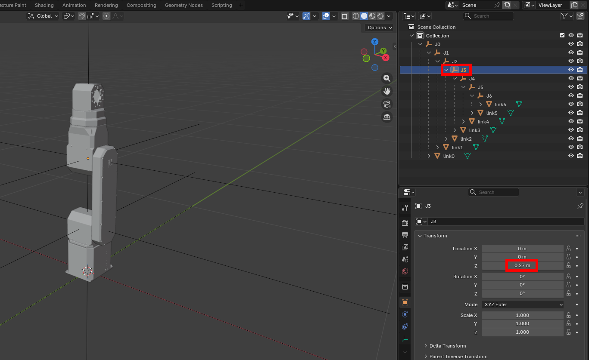

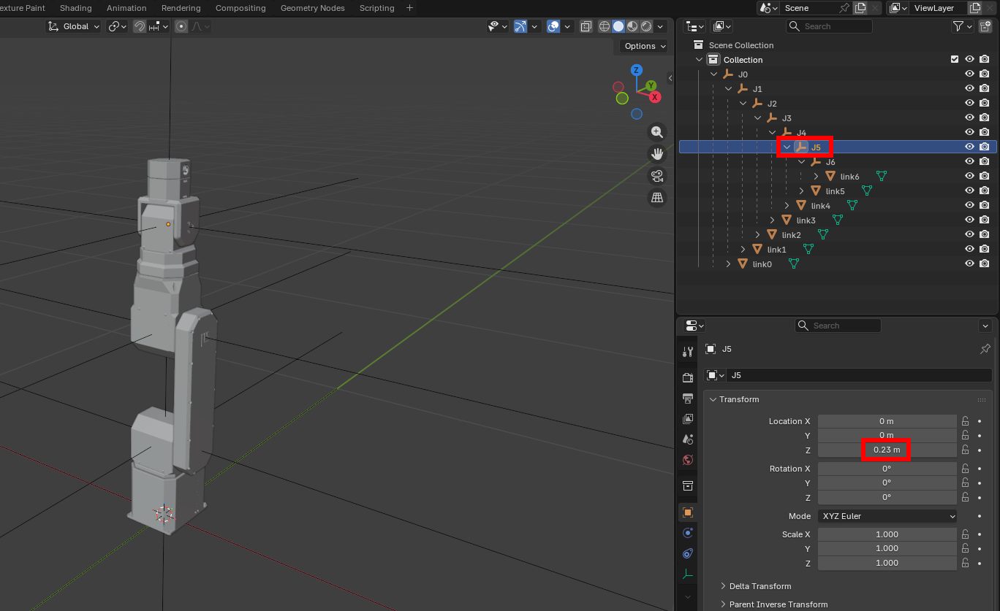

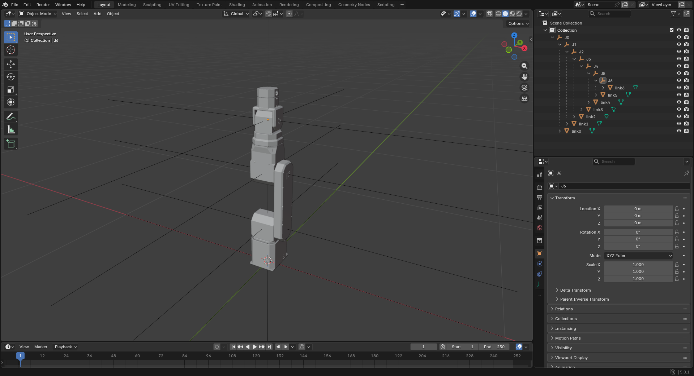
For your own robot, the parts may not line up with the joint axes of the DH parameters. In that case, move the mesh itself in your CAD program. In the assembled pose, the base is at (0, 0, 0) and every joint is at 0.
Joint Axes¶
- Set the rotation axis of each joint
Jnaccording to its DH parameters. - Rotate in the joint's local axes, not in the world axes.
4. Export the Model¶
-
Choose File › Export › glTF 2.0 (.glb/.gltf).
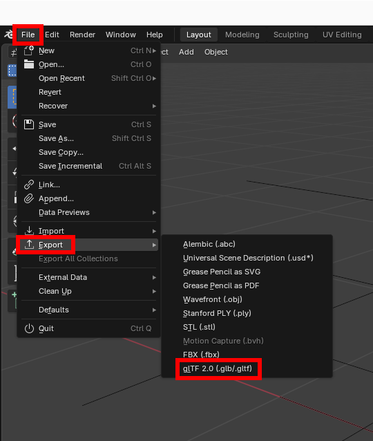
-
In the export window, set Format to glTF Binary (.glb) and, under Transform, clear +Y Up.
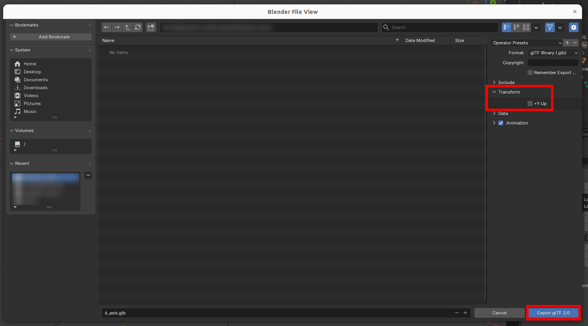


Clear +Y Up. Otherwise Blender converts the model to a Y-up coordinate system, and it appears rotated in Stellar Designer.
The finished files of this example: .blend and .glb.
5. Load the Model in Stellar Designer¶
Open the robot's document in Stellar Designer, click Display in the 3D view and choose Load.glb (Stellar Designer). Switch Representation to 3D Model: each link moves with its joint when you jog the joints in Robot Structure. Motion Studio and the Station then show the robot with this model.
Stellar Designer uses only the .glb file.